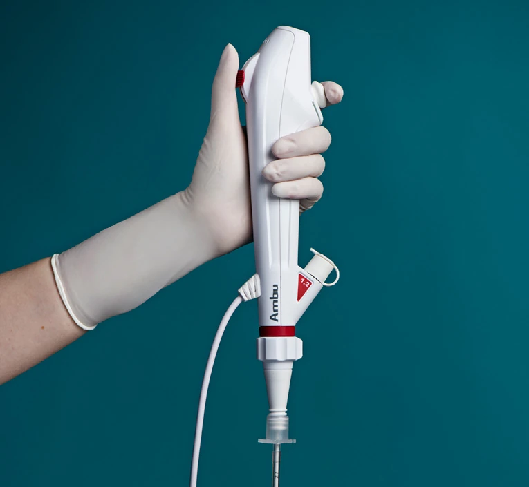
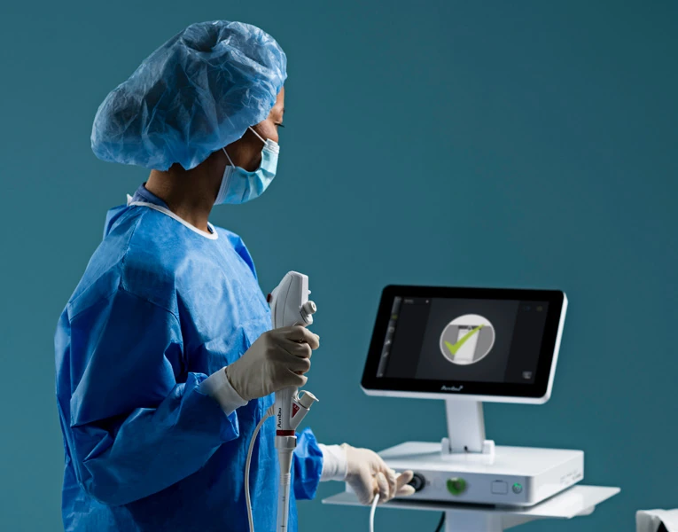

후보 상세 05 / 05 · 2026. 10. 1. 조사 기준
2순위 후보 2 · 일회용
Ambu aScope 5 Broncho UltraSlim 2.7/1.2(덴마크)
1.2 mm 흡인 채널을 갖춘 일회용 초세경 기관지경. 최대 외경 3.2 mm와 12.8인치 화면이 이번 목적의 제약.
- 삽입관 외경
- 2.7 mm
- 최대 외경
- 3.2 mm
- 화면
- 12.8인치
- 흡인 채널
- 1.2 mm
01구매 판단
02사진 자료




사진을 누르면 원본 크기로 열림. 제조사·유통사 실제 자료 사용; 정확 모델이 아닌 계열 사진은 캡션에 표시.
03공개 규격
04ANKOR 33Fr 적용
05모델·판본 구분
06국내 근거·연락처
- 국내 창구: 유파인메드 UPINEMED — 제조사 South Korea 유통망 등재.[37]
- 정확 모델 상태: 5 UltraSlim의 국내 허가·현재 공급 미확인. 기존 품목 정상 기록은 별도.[5]
- 전화: 070-1895-1282 — 제조사 유통망 등재 번호.
- 이메일: oliviajh@kcpmed.com.
- 홈페이지: upinemed.co.kr / 제조사 유통망.[37][42]
07참고문헌
번호는 기본 보고서와 동일. 문서 제목을 누르면 원문으로 이동.
- Insung Medical / Flexicare. VentiBronc Anchor Endobronchial Tube — Instructions for Use, USA. 07/2024.
- 식품의약품안전처. 의료기기 공개 품목·모델 검색.
- Ambu. aScope 5 Broncho — Product and Downloads.
- Ambu. aScope 5 Broncho 2.7/1.2 & 4.2/2.2 — Instructions for Use. V4, 2025/09.
- Ambu. aScope 5 Broncho 2.7/1.2 — Datasheet. V02, 2024/04.
- Ambu. aView 2 Advance.
- Ambu. Local Distributors — South Korea, UPINEMED.
- 유파인메드. Contact.